Rethinking Item Tokenization in Generative Recommenders: From Fixed Atoms to Semantic Subwords
这篇 CIKM 2026 论文由中国科学技术大学团队主导，合作机构包括华为技术有限公司。论文研究生成式推荐中一个容易被“语义 ID 已经足够紧凑”掩盖的问题：同一套固定长度 SID 同时承担目标物品标识与用户历史表示，两种职责对 token 结构的要求其实并不相同。作者提出 Semantic Subword Tokenization（SST），只把历史物品重新编码为可变长度语义子词，目标物品仍按原固定长度 SID 生成。论文唯一入口为 arXiv:2608.22734，代码仓库已核验为 mxrcandy/Semantic-Subword-Tokenization。
固定长度语义 ID 适合作为目标端的稳定解码语法，却不一定适合作为历史上下文表示：把每个历史物品拆成多枚 atom token，会迫使编码器反复重组物品内部语义，挤占本应建模物品间行为迁移的注意力预算。
1. 背景和问题
生成式推荐把下一物品预测改写成自回归生成：先把每个物品映射为若干离散 token，再让编码器读取用户历史、让解码器逐 token 生成下一物品的语义 ID。以 RQ-VAE 或 RQ-KMeans 为代表的残差量化器通常产生固定的四层 SID，例如由粗到细的 <a><b><c><d>。这种形式对目标端很友好：每个物品遵循相同槽位数，解码器可以在固定语法下做 beam search，并用物品 trie 约束生成序列只落在有效 ID 上。问题在于，主流方法又把同一串 token 原样放到历史侧；含 (n_u) 个物品的序列因此从 (n_u) 个语义单元膨胀为 (n_uL) 个 atom token。模型在判断“运动用品之后更可能出现可穿戴电子产品”之前，先要在每个物品内部重新拼回“运动—鞋服”“电子—穿戴”这样的局部语义。
作者把这一现象称为 Intra-item Attention Overload。这里的“过载”并不是说 Transformer 无法处理长度，而是注意力的用途发生了错配：同一物品内部的 atom token 相互关注，主要用于恢复量化器已经编码过的物品级概念；跨物品注意力才承担用户兴趣迁移。固定 SID 把二者混在同一扁平序列中，编码器必须反复学习类似的局部组合。即便总上下文还没触及窗口上限，这些低层依赖也会消耗层数、注意力质量与优化预算。传统 SID 改进多关注码本利用率、碰撞、语义/协同对齐或 tokenizer 与推荐器联合训练，变量长度 SID 则多按物品可区分性或流行度调整标识长度，但这些工作未必直接回答“历史侧为何必须复用解码侧语法”。
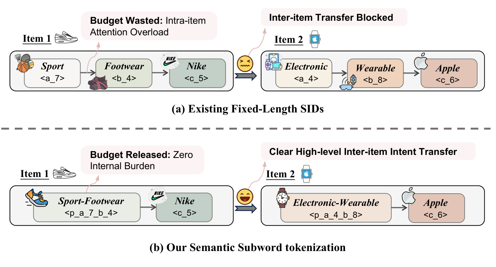
Figure 1 把论文的核心矛盾压缩成上下两个行为片段。上半部分中，每个物品由三枚 atom token 表示，模型既要在物品内部恢复“Sport—Footwear—Nike”这样的组合，又要跨物品识别从运动用品到电子穿戴设备的意图迁移；图中的 “Budget Wasted” 与 “Inter-item Transfer Blocked” 对应的是注意力用途，而不是显存已经耗尽。下半部分把稳定相邻 atom 合成 Sport-Footwear、Electronic-Wearable 语义子词，物品内部重组步骤被部分写进 tokenizer，历史序列更短，跨物品关系更直接。图中仍保留未合并的细粒度 token，说明 SST 不是把所有物品强制池化成一个向量，而是按可复用 span 自适应决定一到多枚历史 token。更重要的是，这张图只描述编码器输入；目标仍使用原 SID，因此不能据此推断解码步数也同步减少。
论文真正有价值之处，在于它没有只用“序列变短所以效果更好”解释结果。作者额外提出 Behavior-induced Co-occurrence Augmentation（BCA），把历史行为里的粗粒度前缀迁移回放为训练样本；又通过 token 级注意力审计、长度匹配随机切分、InputPool、覆盖率分桶与可变目标失败实验，逐层排除“纯压缩”“简单池化”“换个 target grammar 就行”等替代解释。因此 SST 的主张是两段式的：IST 把重复的物品内部组合固化成子词，BCA 再把释放出的建模容量引向跨物品迁移。这个问题还与常规长上下文压缩不同：SST 并非删除低权重历史，也没有把行为摘要交给另一个模型生成，而是在物品标识内部重划 token 边界，用户交互次序和 canonical item identity 都被保留。这样做的可检验预测也更具体——若机制成立，历史中 subword 覆盖更高的样本应获得更明显收益，物品内 atom 注意力应下降，而把相同子词放到目标侧不一定成功。论文后续实验正围绕这三项预测组织。证据仍然来自三个公开数据集、三种生成式推荐骨干和离线指标，尚不能外推到真实线上吞吐、长期用户价值或任意工业码本。
2. 方法
2.1 固定 SID 的双重职责与上下文瓶颈
设物品全集为 (mathcal V)，物品 (v_i) 的语义向量为 (e_i)。残差量化在第 (j) 层从码本 (C_j) 中选择最接近当前残差的 codeword，并把量化误差传到下一层：
符号解释：(r_j) 是第 (j) 层之后尚未被解释的残差，(c_k^j) 是第 (j) 个码本中的第 (k) 个 codeword，索引 (k_j) 对应一枚 atom token。连续 (L) 层得到固定长度标识 (mathbf t_i=[t_{i1},\ldots,t_{iL}])：前层描述较粗语义，后层补充区分具体物品所需的残差信息。SST 不改写这个基础量化器，也不要求端到端重新训练码本；它接收已经稳定的 SID 作为后处理输入。
用户 (u) 的历史 ([v_1^{(u)},\ldots,v_{n_u}^{(u)}]) 被展开成 (T_u=[t_{11},\ldots,t_{1L},\ldots,t_{n_u1},\ldots,t_{n_uL}])，而下一物品继续按固定槽位生成：
符号解释：$T_u$ 是编码器读取的扁平历史，$t_{n_u+1}^{j}$ 是目标 SID 的第 $j$ 枚 token，$t_{n_u+1}^{
2.2 Item-level Subword Tokenization：把稳定 atom span 合成历史侧词元
IST 在物品边界内学习合并规则，绝不把相邻两个物品的 token 拼成一个子词。第一步遍历所有固定 SID，统计相邻 token 对的出现频次与 item support；后者是包含该 token 对的不同物品数量，可以防止只在少量重复样本中高频出现的偶然组合进入词表。第二步反复选择得分最高且同时达到最小频次 $f$、最小支持度 $s$ 的 token 对，在全部物品 SID 中执行合并并更新统计，直到用完 merge budget 或没有合格候选。第三步按已学习规则重放编码，给每个合并 span 分配新的语义子词；未覆盖 atom 保持原样，因此物品历史表示长度 $\\tilde L_i\\leq L$ 且随物品而变。
最简单的 BPE 规则只看出现次数：
符号解释：(operatorname{freq}(t_a,t_b)) 是 atom 对在物品 SID 语料中的相邻出现数。它易实现且偏好高覆盖 merge，但可能反复选择包含通用高频 token 的组合，合并后的子词未必具有强语义专一性。WordPiece 进一步用正 PMI 调整频次：
符号解释：(N) 是所有相邻 token 对的总数，边缘频次衡量单枚 token 的普遍程度，加一用于平滑。只有共同出现超过独立边缘概率预期的 pair 才得到正关联加成，所以 WordPiece 更愿意保留区分性组合；但 PMI 对稀疏统计敏感，频次乘子与 support 门槛仍是必要约束。
论文专门为生成式推荐设计 CondEntropy。先计算双向经验条件概率：
符号解释：(operatorname{freq}{\mathrm{next}}(t_a)) 汇总 (t_a) 后面所有邻居的频次，(operatorname{freq})，得到：}}(t_b)) 汇总 (t_b) 前面所有邻居的频次。两个方向同时高，意味着 pair 不是“一个常见 token 偶然接上某个 token”，而是彼此具有预测性。再用归一化条件熵构造前向、后向纯度 (pi_{mathrm{next}}) 与 (pi_{mathrm{prev}
符号解释：两个平方根分别约束双向可预测性与局部邻接分布纯度；若某 token 只观察到一个邻居，其相应纯度为一。CondEntropy 因而给“高频、互相预测、邻接上下文稳定”的 pair 高分。它比 BPE/WordPiece 条件更严格，但论文实验也表明它并非所有数据集都最优，merge criterion 仍需只在验证集上选择。
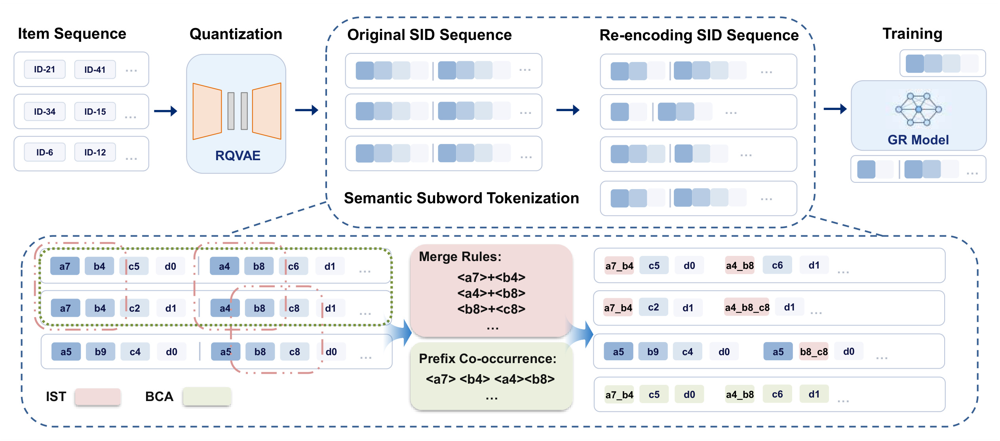
Figure 2 的上半行保留原始生成式推荐链路：物品先经过 RQ-VAE 得到固定 SID，历史再送入 GR Model。SST 插入在量化与推荐训练之间，并没有替换骨干。下半行左侧的 IST 只在单个物品内部观察连续 atom span，按规则把 a7+b4、a4+b8 等组合变成新 token；右侧重编码后的每个物品可能保留两枚、三枚或四枚 token，体现变量长度而非整体池化。中央黄色区域是 BCA 从行为序列抽取的前缀共现信号，它不会直接改变 target SID，而是产生额外训练序列。图里 Target/Training 仍接在固定 SID 语法上，因此 SST 的词表扩张主要发生在编码器输入；部署时需要同步 history tokenizer 与新增 embedding，但不需要让 constrained decoder 同时处理 atom 与 subword 的混合终止规则。
2.3 Behavior-induced Co-occurrence Augmentation：用行为转移填充释放出的容量
只缩短历史不保证模型自然学到有用的跨物品关系。BCA 先取每个物品 SID 的前 (P) 个 token 作为粗语义前缀；论文默认 (P=2)，意在保留高层类别而忽略区分具体物品的后层残差。然后在每个用户的前缀序列上用窗口 (W) 统计 ((p_{\mathrm{left}},p_{\mathrm{right}})) 共现，记录 count、PMI 与 lift，并按指定分数选择 top-(k) pair。选中 pair 后，系统回到原用户行为序列，抽取从左前缀出现到右前缀出现之间的真实历史子序列，把该子序列作为输入、右侧物品作为目标，加入训练集。它不是凭空合成物品，也不是在服务时检索共现表，而是从已有交互中重放较可靠的语义转移。
IST 与 BCA 的信号流存在顺序关系：IST 先把物品内部稳定组合编码为 token，减少每层注意力重做局部组合的需要；BCA 再用额外监督强调高层前缀之间的迁移。前者改变历史表征，后者改变训练样本分布；二者都不改变目标 SID。 BCA 的收益同时伴随成本：它增加训练样本，top-(k)、窗口、最小共现次数和每条序列最大增广数都要调参；共现还可能继承热门物品偏置。论文用长尾分桶做了初步检查，但没有因果证明这些前缀代表用户意图，也没有讨论带时间漂移的线上重建频率。
2.4 非对称 tokenization：历史可变、目标固定
SST 在训练与推理两端都保持同一种非对称结构：编码器看到经过 IST 的可变长度历史，解码器始终生成原始固定长度 SID。变量 history 不会造成目标歧义，因为它只是条件；变量 target 则会让同一位置同时竞争 atom token 与较少见的语义子词，并让序列在不同深度结束。论文观察到这些新增 target token 在训练标签中属于长尾类别，早期 beam 很少选中它们，最终合并物品的召回几乎坍塌。固定四槽 target 配合完整 trie 则继续提供均一语法。
这一边界对复现十分关键：若把 SST 简化成“给 SID 做 BPE”，很容易把同一套规则同时作用到 encoder 和 decoder，所得系统就不再是论文方法。训练管线需要维护两种视图：一个物品的 canonical fixed SID 用于标签、约束搜索和唯一映射；同一物品的 variable history tokens 用于构造用户上下文。线上也必须保证历史重编码规则、子词词表版本与模型 checkpoint 一致。词表增长、热更新、冷启动物品没有 merge、旧行为回放等运维问题都没有被离线结果消除。
3. 实验结果
3.1 数据、骨干与评测控制
实验使用 Amazon Beauty、Amazon Instruments 与 Yelp，先做 5-core 过滤，再按用户时间顺序留最后一次交互做测试、倒数第二次做验证，其余训练，最长历史截断为 20。评测是全物品集合 full ranking，而非采样负例；生成模型统一 beam size 20。三个骨干分别是 RQ-KMeans 版 TIGER-KM、RQ-VAE 版 TIGER-VAE，以及带物品级对齐损失的 LETTER。量化器均用四层、每层 256 codeword；生成骨干是四层 encoder、四层 decoder 的 T5 风格模型。SST 超参与 criterion 仅根据 validation loss 选择，测试集在配置与 checkpoint 固定后才使用。
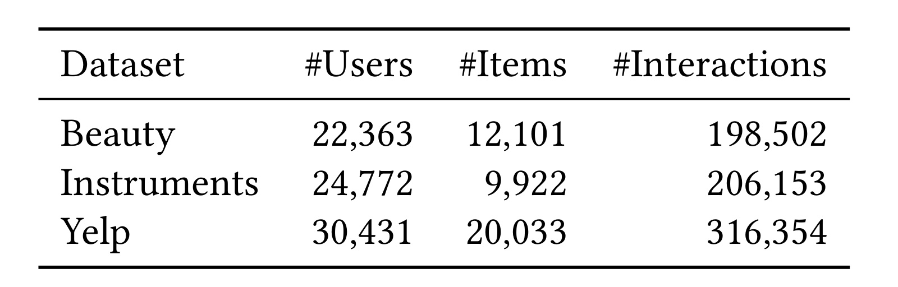
Table 2 显示 Beauty 有 22,363 位用户、12,101 个物品和 198,502 次交互；Instruments 有 24,772 位用户、9,922 个物品和 206,153 次交互；Yelp 有 30,431 位用户、20,033 个物品和 316,354 次交互。三个集合都属于常见的中等规模公开序列推荐基准，能够提供类别结构和稀疏度差异，却不能代表十亿物品、超长历史或高速兴趣漂移的工业流量。5-core 会排除最冷用户与物品，最长 20 的截断也弱化了长上下文压力。因此这张表支撑的是跨三个公开数据分布的一致性检查，不足以证明更长历史下节省 token 的收益会按相同比例扩大，也不能把 full-ranking HR/NDCG 直接换算为线上观看时长或转化率。
3.2 主结果：稳定增益来自历史侧结构，不是任意变长
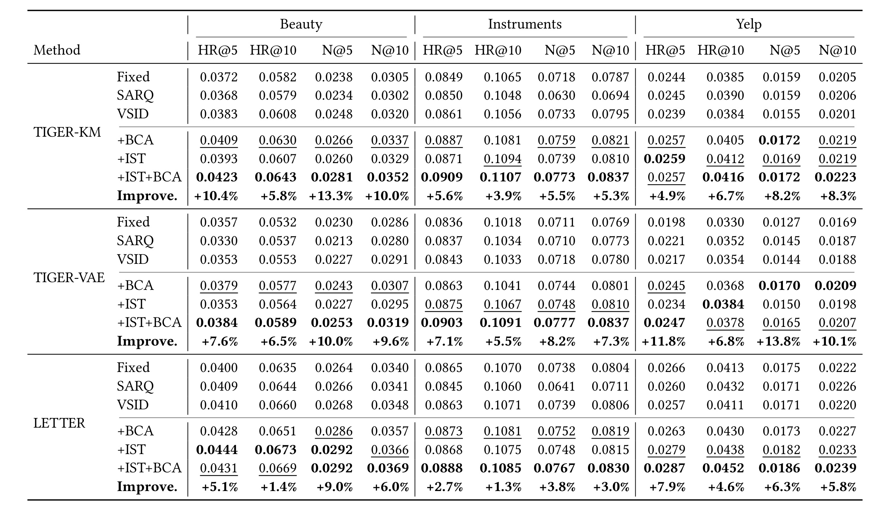
Table 1 同时给出 HR@5、HR@10、NDCG@5、NDCG@10。对 TIGER-KM，完整 SST 相对每列最强非 SST 基线，在 Beauty 四项相对提高 5.8% 至 13.3%，Instruments 提高 3.9% 至 5.6%，Yelp 提高 4.9% 至 8.3%；TIGER-VAE 上相应范围约为 5.5% 至 13.8%，LETTER 上约为 1.3% 至 9.0%。这些是相对提升，绝对值仍处于数据集自身的低召回区间，不能混写。SARQ、VSID 只改历史侧后有时优于 Fixed、有时退化，说明“变短”本身不稳定；+IST 与 +BCA 多数能各自改善，+IST+BCA 在大多数列最佳或接近最佳，但并非每列严格相加。LETTER 绝对表现普遍更强，提示 SST 可以叠加到更好的协同对齐骨干上；同时不同 backbone 的增益幅度不同，不能把表中最好相对百分比当成通用常数。
3.3 注意力负担：从结果相关性走向机制测量
作者在 TIGER-VAE 编码器中记录每个 query token 对同物品与跨物品 key 的注意力质量，并定义两个指标。Intra-Item Attention Budget 是全部输入上分给同物品其他 token 的总注意力，回答“多少全局预算用在物品内部”；Atom Reassembly Load 是 atom query 对同物品其他 atom 的平均注意力，回答“atom 之间互相拼装的依赖有多重”。二者下降不等价：前者关心总量，后者更直接指向低层重组。作者还检查 atom→subword 与 subword→atom 通道非零，用来排除模型简单丢弃物品内部信息的解释。
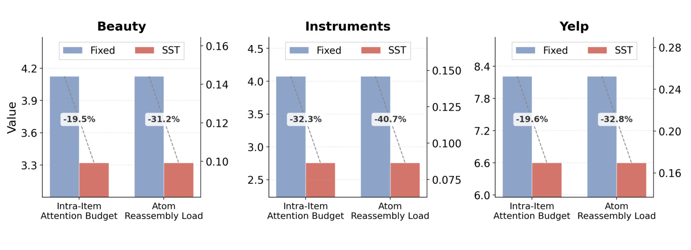
Figure 3 在 Beauty、Instruments、Yelp 上都显示 Fixed 到 SST 的两项指标下降。图中标注的 Intra-Item Attention Budget 相对变化约为 -19.5%、-32.3%、-19.6%，Atom Reassembly Load 约为 -31.2%、-40.7%、-32.8%。这比单看 HR 更贴近论文假设：IST 确实减少了 atom 彼此重组的注意力，而不只是改变输出分数。但注意力质量仍是模型内部诊断，不是严格的因果归因；SST 同时改变序列长度、词表与训练样本，某些下降可能来自 token 计数口径变化。论文通过子通道与控制实验增强解释力，却没有证明“被释放的每一单位注意力”都转移到了有益的跨物品模式，也未报告跨随机种子的置信区间。
3.4 超参数：merge 与 replay 都有有效区间
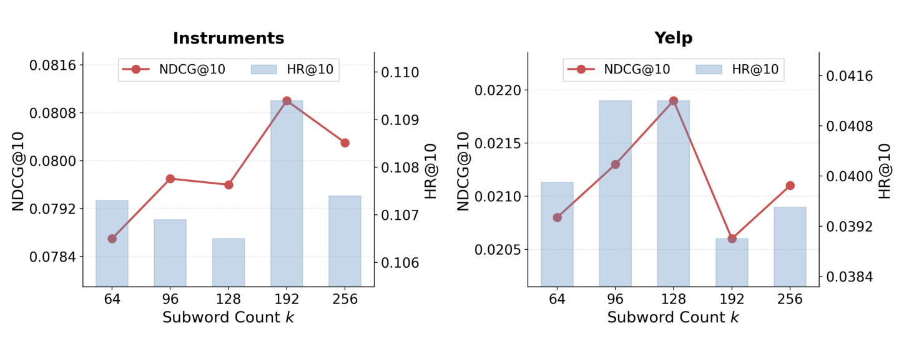
Figure 4 在 TIGER-KM 的 Instruments 与 Yelp 上扫描语义子词数量 (k\in{64,96,128,192,256})。折线是 NDCG@10，柱形是 HR@10，两套指标整体呈先升后降或平台化：Instruments 在约 192 个 subword 附近较好，Yelp 的最佳点更靠近 128，继续扩张到 192 后明显回落，256 也未恢复到峰值。这个形状符合 merge 规则的统计含义：前面的高分 pair 高频且稳定，后续 pair 逐渐稀疏、语义不纯，新增 embedding 的样本支持也更弱。它同时说明词表增大不是免费午餐；工程上应联合监控覆盖率、support、训练稳定性与验证损失，而不能把论文搜索范围中的 64–512 直接视为越大越好。
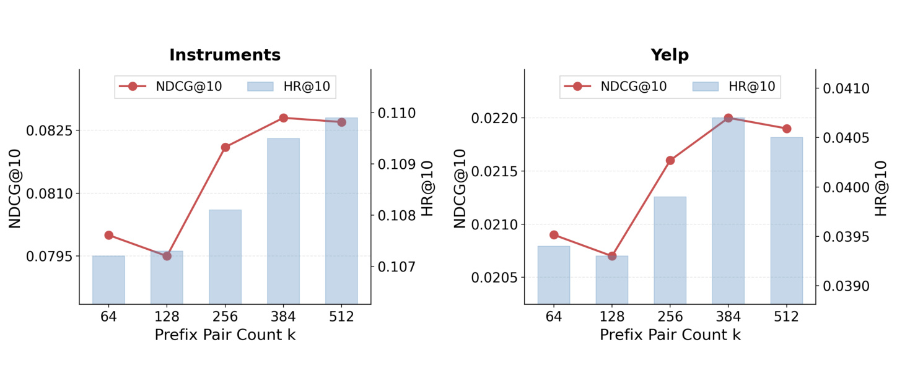
Figure 5 扫描 BCA 选择的前缀 pair 数量 $k\in\{64,128,256,384,512\}$。Instruments 从较小预算到 384 基本上升，512 接近平台；Yelp 在 384 左右达到较高值，继续增至 512 略有回落。这里的 $k$ 与 IST 子词数同名但含义不同：一个决定历史词表中的 merge 数，一个决定被回放的行为转移种类。曲线支持“优先注入高置信转移，边际收益会饱和”，不能证明所有新增 replay 都有效。由于每个 prefix pair 会追溯原始子序列，实际新增样本还受频次、窗口与每序列上限影响；在更热门集中的平台上，较大 $k$ 也可能扩大曝光偏置或训练分布漂移，需要独立在线审计。两条曲线没有给出多随机种子误差条，因此相邻预算点的小差异不宜解释成稳定排序。
3.5 效率：注意力序列缩短，但全流程成本由两股力量相抵
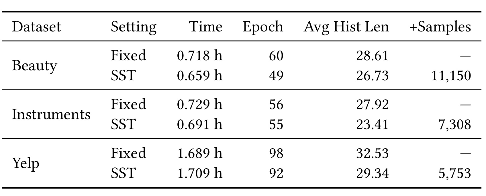
Table 3 把“理论上序列更短”与“实际训练时间”分开。Beauty 的平均历史 token 数从 28.61 降到 26.73，同时新增 11,150 条 replay，完整流程由 0.718 小时降到 0.659 小时、收敛轮数从 60 降到 49；Instruments 从 27.92 降到 23.41，新增 7,308 条，时间 0.729 降至 0.691 小时；Yelp 从 32.53 降到 29.34，新增 5,753 条，时间反而从 1.689 略升至 1.709 小时，尽管轮数从 98 降到 92。IST 减少自注意力输入，BCA 增加训练样本，两者大致抵消，所以论文的稳妥结论是“在这些设置下没有系统性减速”，而不是“线上推理必然加速”。表中时间还包含训练、最佳模型加载和测试，受硬件、实现、batch、序列 padding 与数据管线影响，不能换算为生产 QPS 或 P99 延迟。
3.6 为什么目标侧不能一起变长：aggregate 下降与桶级定位
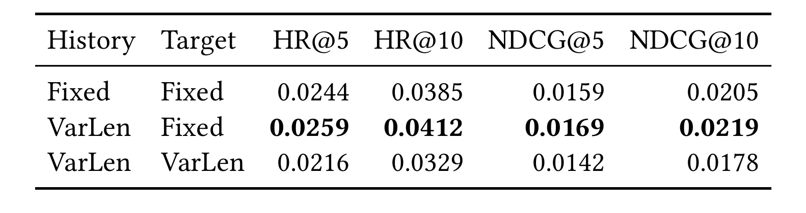
Table 4 在 Yelp/TIGER-KM/BPE 上控制 history 与 target 的 tokenization。Fixed history + Fixed target 的 HR@10/NDCG@10 为 0.0385/0.0205；把 history 改为 VarLen、target 保持 Fixed 后提高到 0.0412/0.0219；连 target 也改成 VarLen，则降到 0.0329/0.0178，HR@5 与 NDCG@5 也同步下降。这组对比直接限定了 SST 的定义：变量长度是条件侧表示优化，不是目标标识替换。它还避免把改进归因于“模型学会了新的 target token”——最优行恰恰没有这么做。实验只覆盖一个数据集、一个骨干与 BPE 配置，但幅度足以提醒复现者，不要为追求端到端形式对称而破坏固定槽位和 trie 的解码先验。
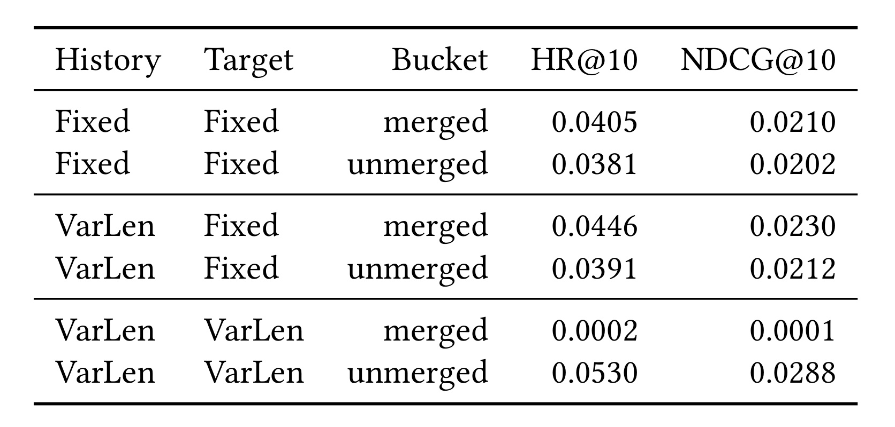
Table 5 进一步把测试物品按目标 SID 是否含语义子词分成 merged 与 unmerged。VarLen history + Fixed target 时，两桶相对 Fixed 都提高：merged 的 HR@10/NDCG@10 从 0.0405/0.0210 到 0.0446/0.0230，unmerged 从 0.0381/0.0202 到 0.0391/0.0212，说明历史中出现合并 token 并未让对应物品天然更难预测。VarLen target 开启后，merged 桶骤降到 0.0002/0.0001，unmerged 桶仍有 0.0530/0.0288。作者的解释是 merged 目标需要生成训练频次稀少的 subword 或更短序列，它们在早期 beam 中被高频 atom 挤出；unmerged 仍遵循原四槽语法。这个近零结果是设计失败诊断，不应包装成 SST 本身的性能缺陷，因为正式方法从未启用变量 target。
3.7 覆盖率：有 subword 的历史越多，收益通常越明显
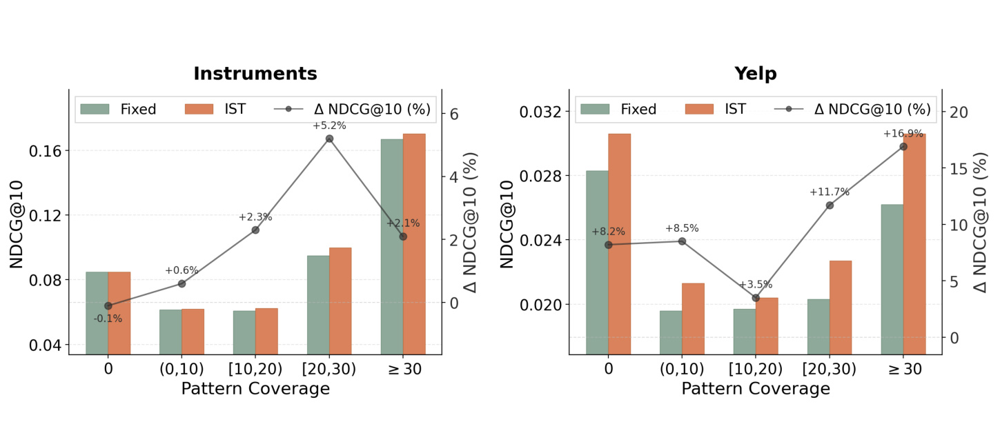
Figure 6 按历史中语义子词占比做细分。Instruments 的 0% 覆盖桶相对增益接近零，随后随覆盖上升而增强，在中高覆盖区达到更大正增益；Yelp 各桶都为正，最高覆盖桶最强，但 0% 桶也有改善。前者符合直接机制：历史实际使用更多 subword，模型越少重复 atom 重组；后者提醒 BCA、共享参数或训练分布变化也会让未覆盖样本受益。因此作者没有把 0% 桶的提升当作子词直接效果，而强调跨设置更一致的模式是“覆盖越高，收益总体越大”。这仍是相关性证据：覆盖率可能与物品流行度、类别密度或序列可预测性相关，若要形成因果结论，还需要按这些混杂因素匹配样本或随机控制 merge assignment。分桶样本量也未在图中展示，最高覆盖桶的方差风险需要复现时补查。
3.8 附录控制：criterion、压缩替代项与流行度
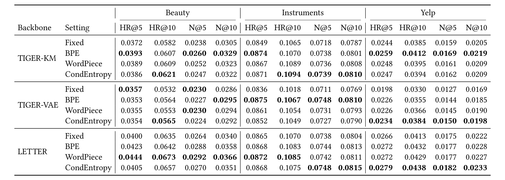
Table 6 表明不存在一个 merge criterion 横扫所有组合。Beauty 上 WordPiece 尤其适合 LETTER，多项达到该块最佳；Yelp 上 CondEntropy 在多数骨干/指标中更强；Instruments 的领先规则随骨干和指标切换，且相对 Fixed 的差距较小。BPE 仍普遍有竞争力，说明核心收益来自历史侧语义子词，而不完全依赖作者新分数。更严格的 CondEntropy 在共现结构多样或噪声较大的 Yelp 更有效，是作者基于结果给出的解释，不应上升为数据集类型定律。复现时应像论文一样仅用 validation loss 选择 criterion，避免看 test 指标后挑规则；线上词表版本还要记录所用语料窗口、频次与 support，否则 merge 规则难以可重复。
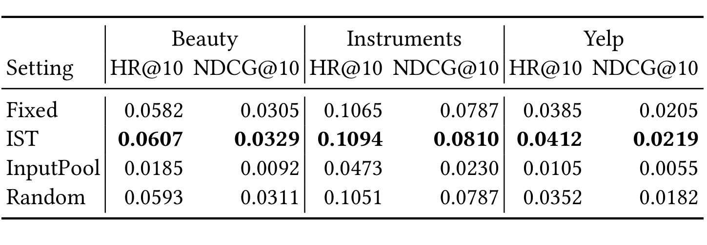
Table 7 在 TIGER-KM 且目标固定的条件下比较四种历史表示。IST 在 Beauty、Instruments、Yelp 的 HR@10/NDCG@10 分别为 0.0607/0.0329、0.1094/0.0810、0.0412/0.0219，全部高于 Fixed。InputPool 把物品内部 atom 顺序直接均值化，三组结果大幅坍塌，说明“每物品一个紧凑向量”丢失了生成骨干需要的结构；Random 与 IST 匹配长度但随机选择连续 span，在 Beauty 略有小幅改善，却在 Instruments 和 Yelp 不如 Fixed 或明显低于 IST。由此更合理的归因是：压缩有助于减少长度，但必须由数据支持的相邻语义组合保留结构。该控制仍共享模型与数据预处理，尚未比较学习型 pooling 或专门为变量 history 设计的 encoder。
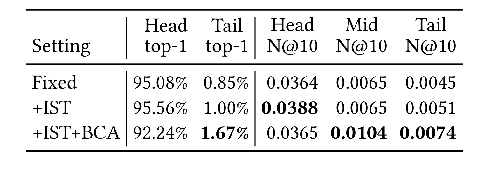
Table 8 用未增广训练频次把物品分为头部 20%、中部 30%、尾部 50%。Fixed 的 top-1 推荐中头部占 95.08%、尾部仅 0.85%；+IST 为 95.56%/1.00%，头部曝光近似持平、尾部略升，且头部与尾部 NDCG@10 从 0.0364/0.0045 提到 0.0388/0.0051。+IST+BCA 把头部 top-1 占比降到 92.24%、尾部升到 1.67%，中部和尾部 NDCG@10 达 0.0104/0.0074，但头部 NDCG@10 为 0.0365，未超过 IST。结果说明在这个 Yelp 设置里，BCA 没有加剧曝光集中，反而伴随中尾部质量改善；它不证明 BCA 普遍去偏，也不能把曝光比例变化直接解释为公平性提升，因为用户效用、供给质量与长期反馈均未评估。
4. 总结
4.1 我的判断与可迁移价值
SST 最清晰的贡献不是“又一种 SID tokenizer”，而是把物品标识语法与上下文表示拆成两个接口。目标端需要唯一、稳定、便于约束搜索；历史侧需要紧凑地表达物品级概念与跨物品迁移。IST 用可复用 subword 把一部分局部组合前移到 tokenizer，BCA 再用真实行为片段强调粗语义转移。三数据集、三骨干的结果、注意力诊断、长度匹配控制和变量目标失败共同组成相对完整的论证链。对推荐系统而言，可优先在不动现有 target trie 的前提下试验 history-only 重编码；对大模型/RAG/Agent 而言，它提示“输出语法 token”与“上下文记忆 token”未必应共享同一粒度，压缩上下文时也要用任务转移信号约束，而不是只追求短。
4.2 局限、风险与后续跟进
局限至少有五点。第一，证据全部是 Beauty、Instruments、Yelp 的离线 full-ranking，5-core 与长度 20 不能覆盖工业冷启动、超长兴趣与实时漂移。第二，SST 扩大历史词表并引入 tokenizer 版本管理；新物品、规则热更新、旧日志回放和 embedding 冷启成本未量化。第三，注意力质量下降是机制诊断但非因果证明，token 数变化也改变了统计分母。第四，BCA 依赖行为共现，可能放大曝光反馈或时间泄漏；Yelp 的流行度分析只是单点证据。第五，Table 3 的全流程时间没有硬件复现细节与服务延迟，不能外推为线上 QPS 提升。第六，criterion 依赖数据/骨干，CondEntropy 不是无条件最优。
后续建议依次做四件事：其一，在官方代码上复现 Table 4/5，先确认 history-only 与 target-fixed 边界，再扩展方法；其二，用相同平均 token 长度比较 IST、随机 span、可学习 pooling 和边界感知压缩，隔离结构与长度贡献；其三，在更长历史和大词表上记录 padding 后 token 数、训练 FLOPs、显存、编码延迟、解码延迟与 P99，而不是只看总小时数；其四，对 BCA 做时间切分和曝光倾向校正，并按新物品、尾部物品与行为稀疏用户分桶。只有这些结果同时稳定，才适合讨论工业迁移；当前论文更可靠地证明了一个建模原则和一套离线实现，而非线上收益保证。